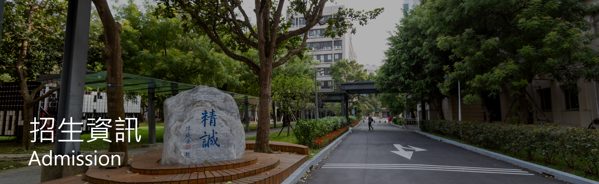

國立臺灣柯基大學 資訊管理系
National Taiwan Corgi Unuversity Department of Information Management
首頁
招生資訊
學生登入
關於我們

大學部招生公告
[2021.03.30] (3/31 上午10:00起請至科技校院聯合招生委員會查詢) 110學年度高中生申請入學招生第一階段篩選結果
[2021.03.06] 公告本校110學年度大學部四年制運動績優學生單獨招生術科考試時間地點
[2021.03.03] 110運動績優術科考試因應「新型冠狀病毒肺炎」注意事項
研究所招生公告
[2021.03.31] 110年度博士班招生簡章公告
[2021.03.23] 110學年度碩士班、碩士在職專班錄取名單公告
[2021.03.18] 110學年度碩士班招生報到切結書
 國立臺灣柯基大學 資訊管理系
國立臺灣柯基大學 資訊管理系 國立臺灣柯基大學 資訊管理系
國立臺灣柯基大學 資訊管理系